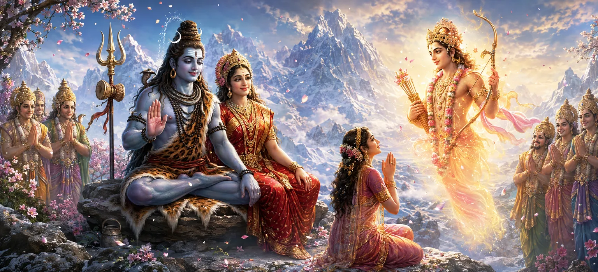

After the joyful festivities celebrating the marriage of Lord Shiva and Goddess Pārvatī, the gods remembered Kāma, the deity of love, who had been reduced to ashes by the fire of Shiva’s third eye. His devoted wife Rati had endured profound sorrow while awaiting the fulfilment of Shiva’s promise. With humility and hope, she approached the compassionate Lord and prayed for the restoration of her beloved husband.
While the gods and celestial beings rejoiced in the divine wedding, Rati remembered the sacrifice made by her husband. Kāma had acted at the request of the gods, attempting to awaken love within Shiva so that His union with Pārvatī could eventually lead to the defeat of Tārakāsura.
Gathering courage, Rati approached Lord Shiva with folded hands. Overcome with emotion, she bowed at His lotus feet and praised Him as the merciful protector of devotees, the destroyer of sorrow, and the Supreme Lord who grants refuge to all who sincerely seek His grace.
Rati humbly reminded Shiva that Kāma had not acted for personal gain. He had accepted a dangerous task solely for the welfare of the gods and the protection of creation. She prayed that her husband’s sacrifice would now be rewarded through the Lord’s boundless compassion.
Brahmā, Viṣṇu, Indra, and the assembled gods joined Rati in her appeal. They acknowledged that Kāma had acted according to their request and that his effort had helped prepare the way for the sacred marriage of Shiva and Pārvatī.
Lord Shiva listened patiently to Rati and the gods. Free from anger and filled with compassion, He remembered the promise He had made after Kāma was reduced to ashes. Seeing Rati’s unwavering devotion and the sincere repentance of the gods, Shiva decided that the time had come to restore Kāma.
Rati’s unwavering devotion transforms sorrow into hope and earns the compassion of Lord Shiva.
Kāma accepted a dangerous mission for the protection and welfare of the three worlds.
Shiva’s grace restores those who approach Him with humility, sincerity, and genuine devotion.
Lord Shiva cast His compassionate glance upon the place where Kāma had been reduced to ashes. Through the power of His divine will, Kāma was restored and once again appeared before the assembled gods. The entire celestial gathering was filled with wonder and happiness upon witnessing the merciful act of the Supreme Lord.
The revival of Kāma reveals that divine justice is always accompanied by compassion. Actions produce consequences, but sincere devotion, repentance, and selfless sacrifice can attract the restoring grace of the Supreme Lord.
When Rati saw her beloved husband restored through Shiva’s grace, her grief immediately disappeared. With tears of gratitude, she bowed repeatedly before Lord Shiva and Goddess Pārvatī. Kāma also offered reverent salutations and acknowledged the limitless power and mercy of Mahādeva.
Lord Shiva instructed Kāma to perform his duties with wisdom and restraint. Desire was necessary for the continuation of creation, but it had to remain guided by righteousness. Kāma accepted Shiva’s command and promised to fulfil his cosmic responsibility without disturbing those established in devotion and spiritual discipline.
“Divine compassion restores what has been lost and transforms suffering into wisdom, devotion, and renewed purpose.”
Through the heartfelt prayers of Rati and the assembled gods, Lord Shiva compassionately restored Kāma and blessed him to resume his cosmic duty with wisdom and restraint. With harmony restored and the divine wedding celebrations completed, Shiva and Pārvatī now prepare to depart from the residence of Himālaya.